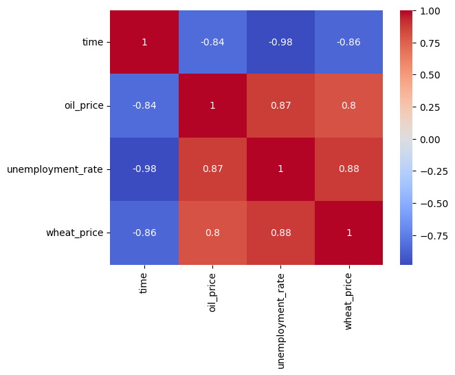

Motivation
The intricate relationship between real-world events, as captured in news articles, and economic indicators is crucial for informed decision-making across various sectors. Understanding this dynamic interplay can significantly enhance economic forecasting, strategic business planning, and trade policy analysis. This project stems from the recognition that large-scale text data, when analyzed alongside commodity prices and macroeconomic data, can reveal valuable patterns, correlations, and trends that extend beyond numerical associations, encompassing the nuanced narratives that shape our economic world.
Task
We set out to develop an analytical framework to understand the relationship between emerging trends from large-scale text data, such as news articles, and commodities/macro-economics. Our primary objective was to correlate news trends with the performance of specific market sectors or assets. This involved analyzing a comprehensive dataset of news headlines from HuffPost spanning from 2012 to 2018, alongside daily data on wheat prices, crude oil prices, and monthly unemployment rates.
Action
We employed a multifaceted approach combining Natural Language Processing (NLP) techniques and statistical methods. For the textual analysis, we utilized NLP techniques such as tokenization, stopword removal, and frequency analysis to extract meaningful features from news headlines. We conducted time series analysis to track the evolution of keywords and themes over time. Statistical methods, including Spearman rank-order correlations and regression analyses, were applied to investigate relationships between news trends and economic indicators. We also performed extensive data manipulation, including date format conversions, handling missing data, and joining datasets with different timelines.
Results
Our analysis revealed complex relationships between news trends and economic indicators. We found strong positive correlations between wheat prices, oil prices, and unemployment rates. However, the frequency of economy-related keywords in news headlines showed only weak correlations with actual commodity prices. This suggests that while economic indicators are closely interrelated, news reporting may not always accurately reflect economic realities. Our regression models demonstrated significant relationships between these variables, with up to 82.6% of unemployment rate variability explained by wheat and oil prices. These findings provide valuable insights into the dynamics between news sentiment and economic factors, while also highlighting the importance of cautious interpretation when inferring causation from correlation in economic analyses.
